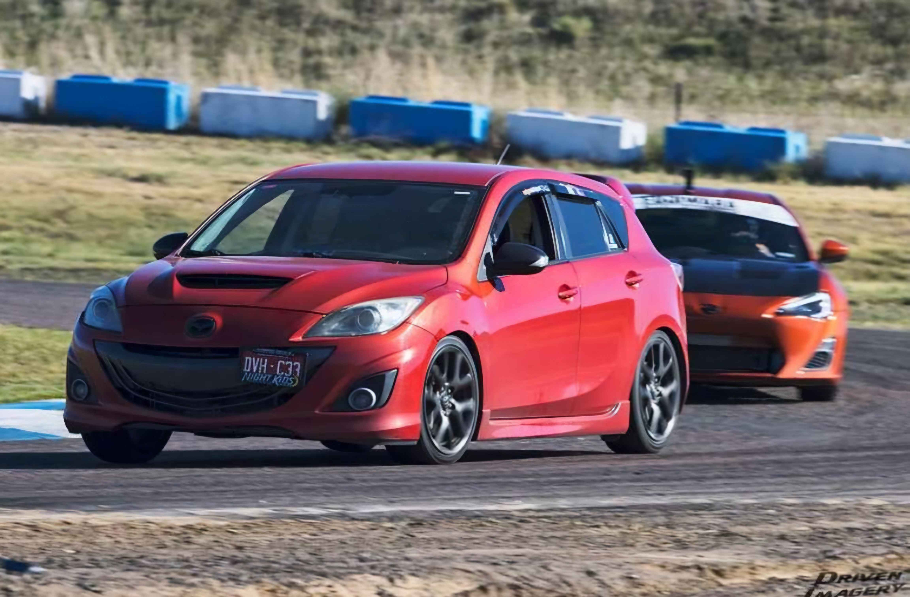
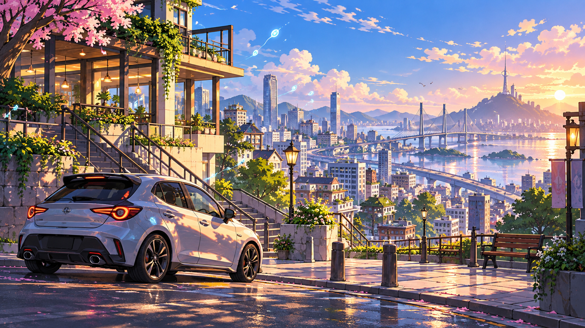

I enjoy racing in road races at both Pikes Peak Int Raceway and High Plains Raceway. It gives me a sense of adrenaline and it always feels like a constant rollercoaster that you command. I have a modified and tuned 2013 Mazda MAZDASPEED 3 Sport pushing 380 Horsepower with a whooping 350 ft lbs of Torque. It really is a fun and balanced car around the track and its my pride and joy.

I am also a big fan of gaming. I have been playing a variety of games since I was 12 but some genres I enjoy the most is racing games but I also enjoy Role Playing Games or RPG titles. A good one I've been getting into is called Neverness to Everness and it is a vast open world game where you can drive vehicles and have excellent and unique character combat mechanics. Whether you are a casual or hardcore player theres always something in the city of NTE that you can do to meet all playstyles.

Snowboarding is one of my favorite ways to enjoy Colorado’s winters. I started when I was around 12 or 13 years old, and I usually go every other year. I love snowboarding in Aspen, but I also enjoy Winter Park because I can take the train and avoid traffic. What keeps me coming back is the scenery and the sense of freedom I feel riding down the slopes. The beautiful mountains, spacious and warm cabins, and time spent with friends make each trip something to look forward to.